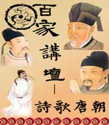

名称：
集数：
播出时间：
百家讲坛 诗歌唐朝
10
2008年01月21日
历代的诗歌成就，最接近唐诗的是宋诗，就是元明清那段比较差一点，宋诗最接近唐诗，宋代的诗人对唐诗就有非常高的评价，我们看北宋三大诗人之一王安石，王安石说过一句话，说“世间好语言，以被老杜道尽”，老杜就是杜甫，就是世界上好的句子都被杜甫给写完了。他又说一句话，说“世间俗语言”，就是通俗的好的句子，“已被乐天道尽”。乐天就是白乐天，就是白居易，就是王安石认为，典雅的好的诗句，优美的句子，都被杜甫写光了，而通俗一点好的诗句，都被白居易写光了。王安石，他作为一个大诗人，他有这样一种感受，觉得唐朝的诗人太了不起，几乎把所有好句子都写掉了，唐代社会、全社会从上到下都有崇尚诗歌的风气。在这样一种风气下面，当然很多人，大家都来写诗，有才华的人，都把他们的才华用在诗歌写作上，所以我们说唐诗要不好也难，它一定会好。那么，唐诗究竟好在哪里呢？为什么唐诗能够成为中国古典诗歌成就的最高峰呢？南京大学中文系莫砺锋教授，做客百家讲坛，将为您精彩讲述《诗歌唐朝》系列节目。